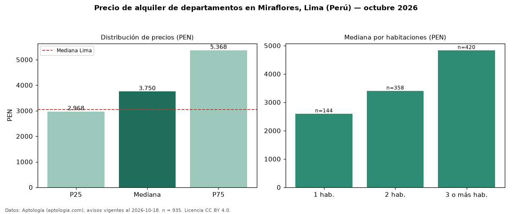

Precio de alquiler de departamentos en Miraflores, Lima (Perú) — octubre 2026
PEN 3.750 al mes es el canon mediano de departamentos en alquiler en Miraflores, Lima (Perú) (n = 935 avisos). Eso es 23 % por encima de la mediana de Lima para departamentos (PEN 3.050). Por metro cuadrado, la mediana es PEN 36,71/m² al mes (n = 919 avisos con área), 12 % por encima de Lima (PEN 32,91/m²). Por precio mediano es el puesto 2 de 16 distritos de Lima con al menos 30 avisos de departamentos en alquiler (PEN): entre las más caras. Con el precio por m² de venta del mismo segmento (PEN 8.884/m²), la rentabilidad bruta implícita es 5,0 % anual (aproximación con medianas de ofertas distintas). El área mediana anunciada es 110 m². El segmento con más oferta es el de 3 o más habitaciones (420 avisos, mediana PEN 4.836); pasar de 1 habitación a 3 o más habitaciones cambia la mediana +86 %. La cuota de mantenimiento o condominio mediana declarada es PEN 380 al mes (n = 202), aparte del canon. Datos: Aptología (aptologia.com), CC BY 4.0 — https://www.aptologia.com/pe/alquiler/lima/miraflores. Archivos: PDF, CSV con las cifras y gráfica PNG.

| Avisos únicos | 935 |
|---|---|
| Percentil 25 | COP 2.967 |
| Mediana | COP 3.750 |
| Percentil 75 | COP 5.368 |
| Mediana por m² | COP 36 |
Fuente: avisos vigentes de portales inmobiliarios recopilados por Aptología, deduplicados (mínimo 30 avisos únicos por celda). Precios pedidos, no cerrados. Fecha: 2026-10-18.